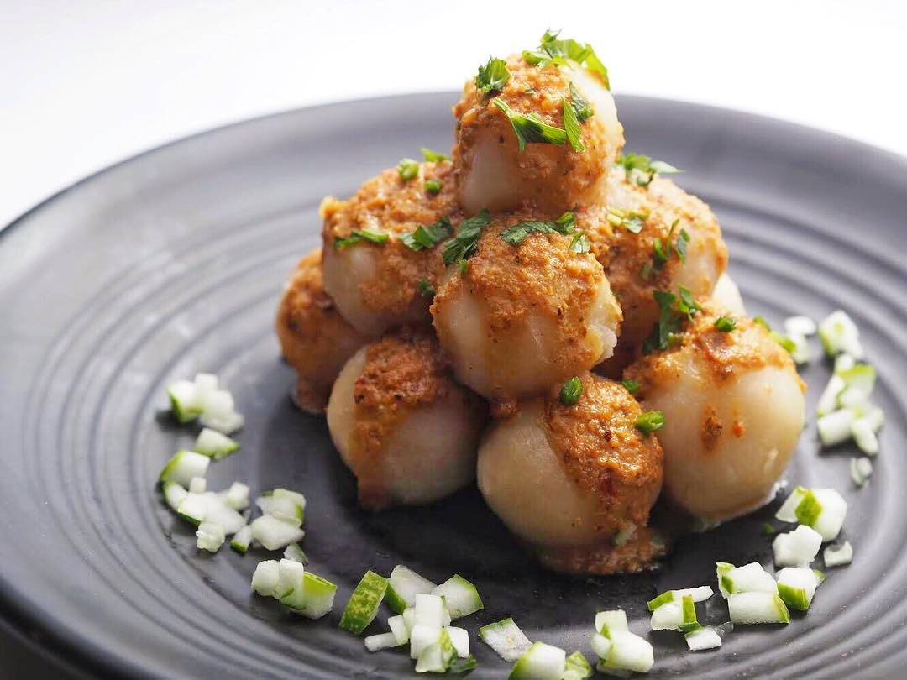

CILOK

RESEP:
- 100 gram tepung tapioka
- 250 gram tepung terigu
- 2 siung bawang putih
- 2 sdm kaldu bubuk
- 1 sdt garam
- 1/2 sdt merica bubuk (opsional)
- 500 ml air
BUMBU KACANG
- Bumbu kacang instan (merek sinti)
- 170 ml air
|
CARA MEMBUAT:
- Siapkan wadah lalu masukkan tepung tapioka, tepung terigu, kaldu, dan garam
- Haluskan bawang putih lalu masak bawang putih yang sudah dihaluskan dengan air hingga mendidih
- Jika sudah mendidih masukkan kedalam wadah berisi adonan cilok
- Uleni adonan hingga kalis, lalu bentuk adonan menjadi bulat
- Didihkan air, beri sedikit minyak agar cilok tidak lengket saat direbus, kemudian rebus cilok hingga mengapung
- Cilok yang sudah mengapung dapat diangkat dan dimasukkan kedalam panci kukus, dan kukus cilok selama kurang lebih 10 menit
- Siapkan panci, masukkan bumbu kacang instan dan air, aduk bumbu hingga merata dan bumbu instan larut dalam air, tunggu mendidih kemudian matikan api
- Cilok siap disantap dengan bumbu kacang! kamu bisa menyantapnya dengan tambahan saus dan kecap.
|